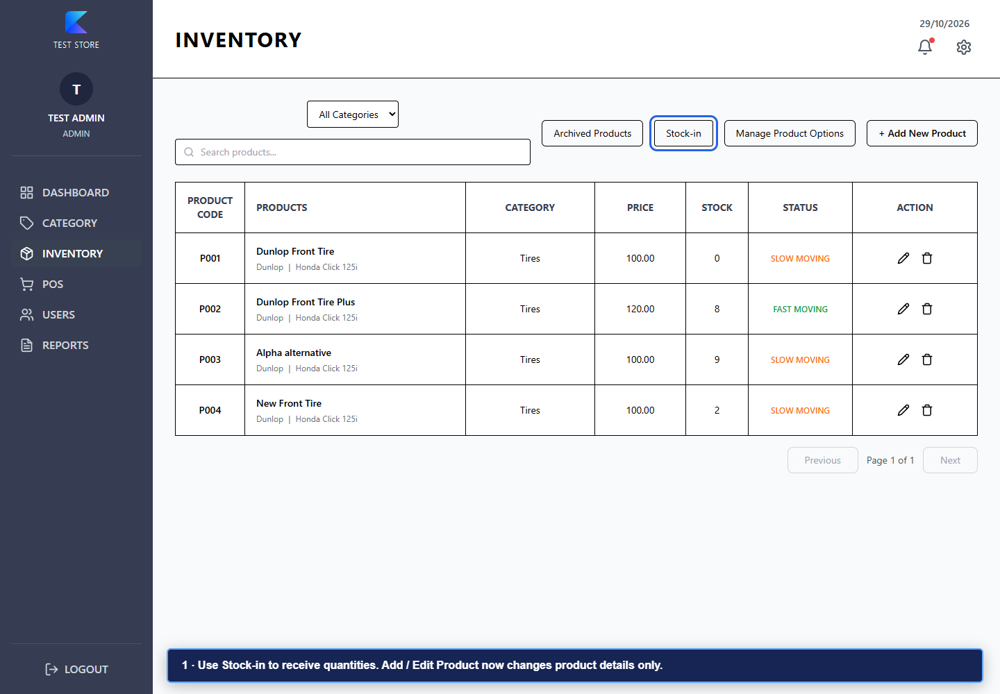
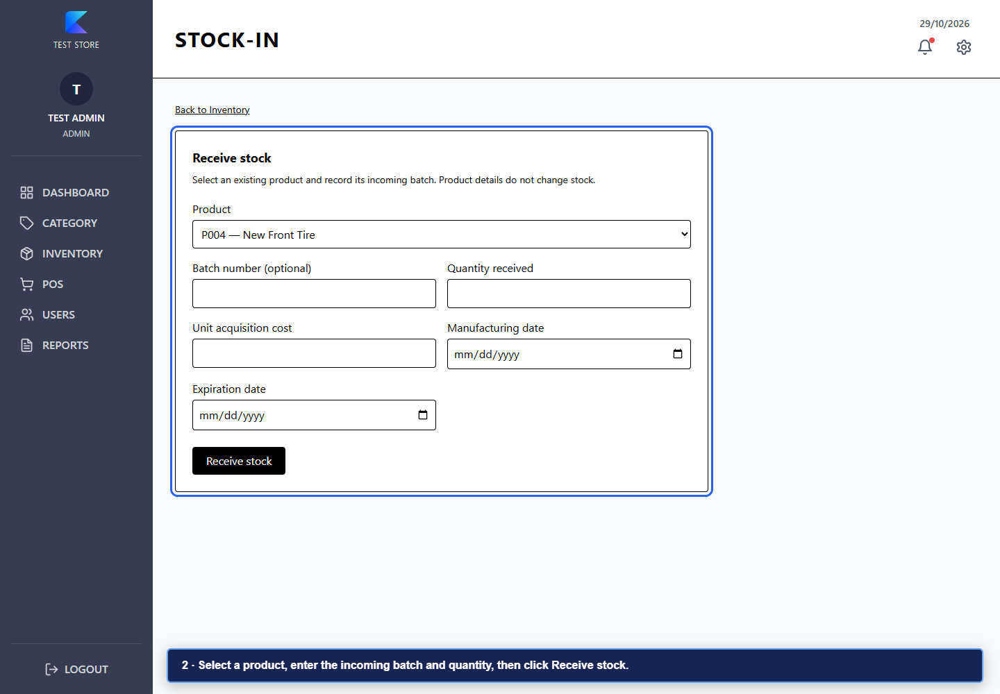
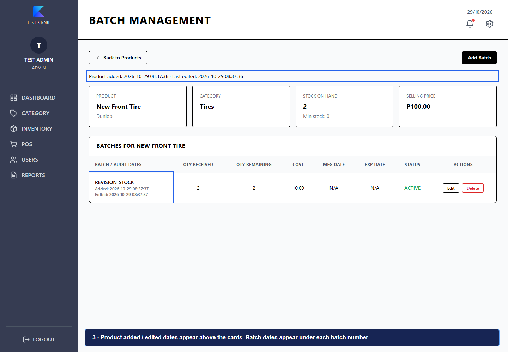
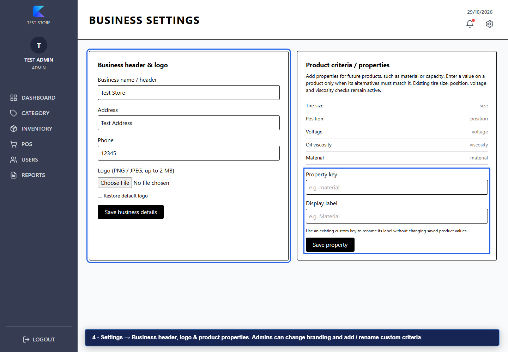
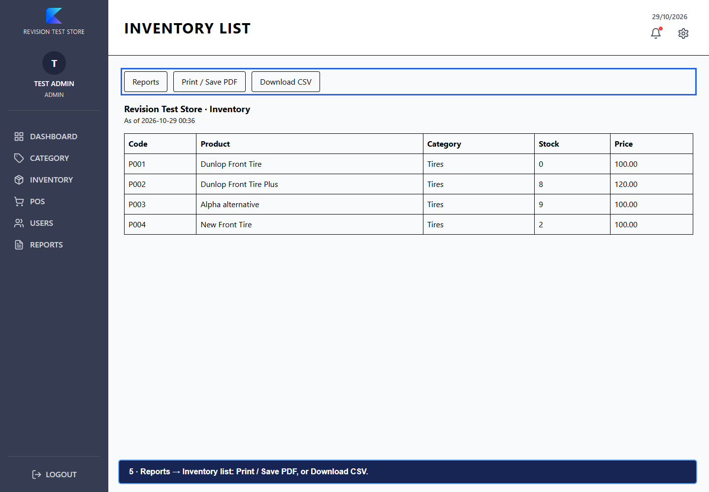
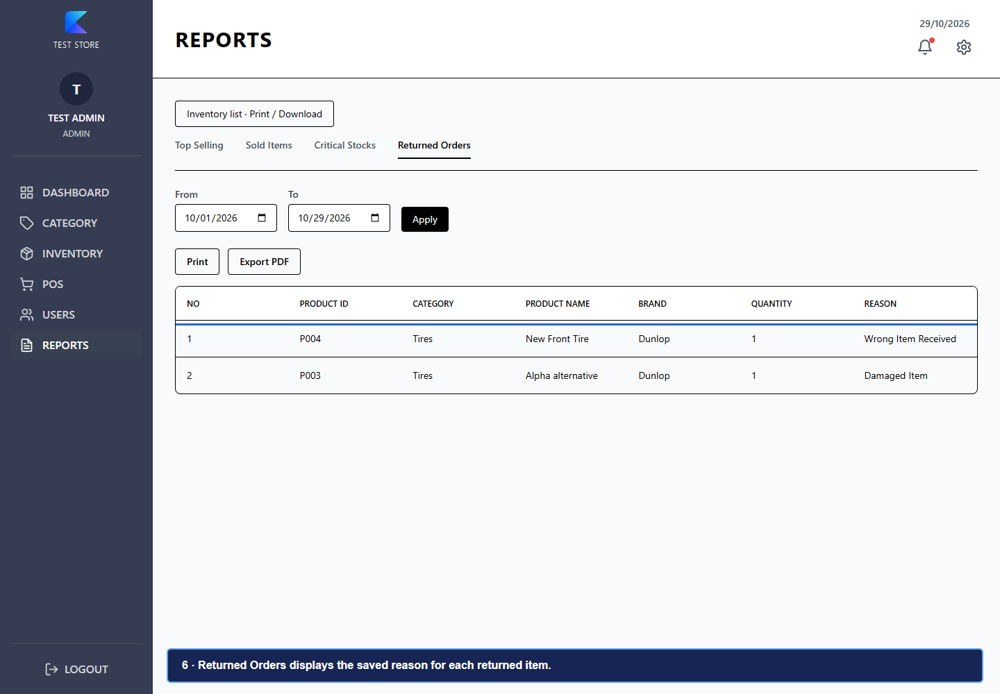
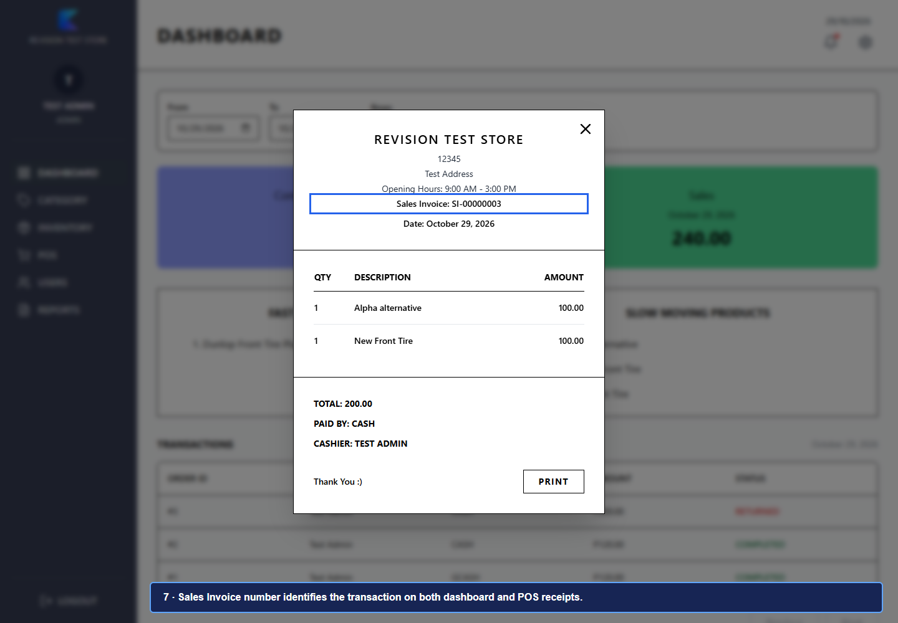
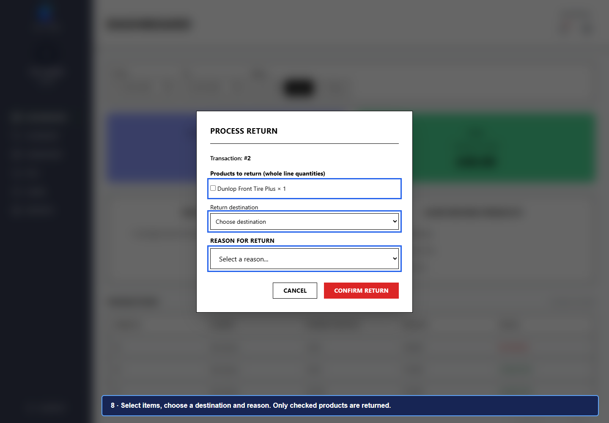

Blue outlines and labels point to the new controls. These screenshots use a disposable test database.
Product forms no longer change quantities. Click Stock-in to receive products.

Choose an existing product, record its batch and incoming quantity, then receive stock.

See product creation and edit dates and batch creation / update dates. Older unrecorded dates are shown as not recorded.

Open the gear icon, then Business header, logo & product properties. Admins can edit branding and add or rename custom properties. Fill a property on a product when its alternatives must match it.

Reports → Inventory list. Print or save a PDF through the print dialog, or download CSV.

Returned Orders shows the saved reason, including items returned from a partially returned sale.

Both POS and dashboard receipts show an SI-prefixed sales invoice number.

Open a dashboard receipt and click Return. Select whole product lines, a destination and a reason. Sellable items return to their original batches. Damaged or expired returns must not be restocked.
